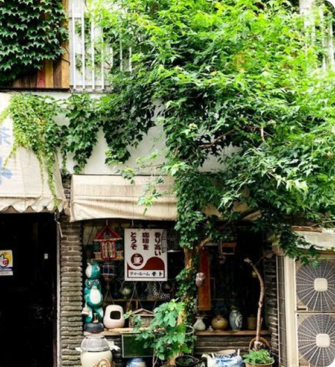
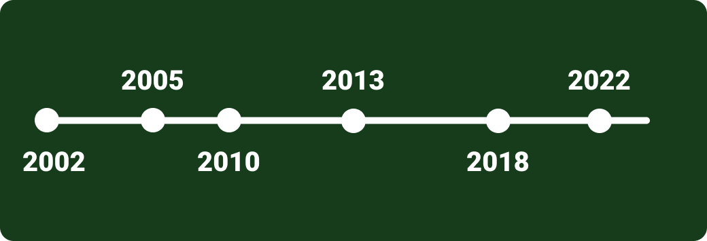

О Кофейне
Greenhouse – это больше чем кофейня. Это пространство, где любовь к вкусному кофе сочетается с осознанным отношением к планете. Мы создаем уютные места с атмосферой живого города, где каждое утро начинается с ароматного эспрессо, а вечер – с душевного общения под звуки приятной музыки. Мы создаем уютные места с атмосферой живого города, где каждое утро начинается с ароматного эспрессо, а вечер – с душевного общения под звуки приятной музыки.
Развитие сети кофеен GreenHouse
2002: Основание
В небольшом городе открылась первая Green House — уютная кофейня с экологичным дизайном и упором на натуральные продукты.Основная концепция: «Кофе и атмосфера, как в теплице» — много растений, деревянный интерьер, натуральное освещение.В меню: эспрессо, капучино, домашние десерты и свежие сэндвичи.
2005-2007: Первое расширение
Появился второй филиал в центре города.Введена система обжарки зерен на месте — уникальный вкус стал «фишкой» сети.Запуск авторских напитков: мятный раф, лавандовый латте.
2010: Ребрендинг и франшиза
Новый логотип и фирменный зелёный цвет.Открыты 5 кофеен в других городах России (Москва, Казань).Появился веганский ассортимент: овсяное молоко, безглютеновые десерты.
2013: Выход в премиум сегмент
Запуск Green House Roastery — собственной кофейной лаборатории.Участие в международных чемпионатах бариста (например, заняли 3-е место на Russian Coffee Expo).
2018: Digital-революция
Коллаборации с локальными брендами (например, веганские круассаны от «Искреннего пекаря»).15 кофеен в России + первая точка в Минске (Беларусь).
2022- настоящее время: Новые вызовы
Сеть насчитывает 25 кофеен в 7 странах (добавились Казахстан и Армения).Экологичные инициативы: многоразовые стаканы, переработка кофейной гущи. В планах: выход на рынок Европы (первая кофейня в Берлине).